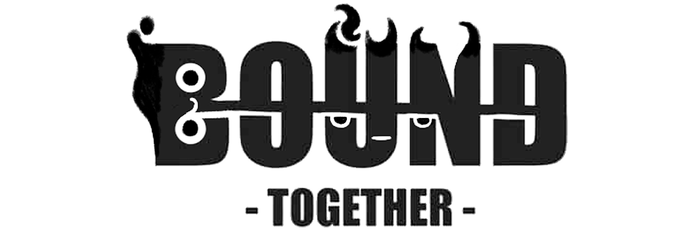
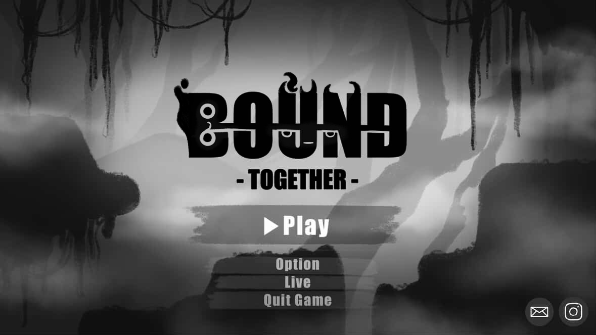
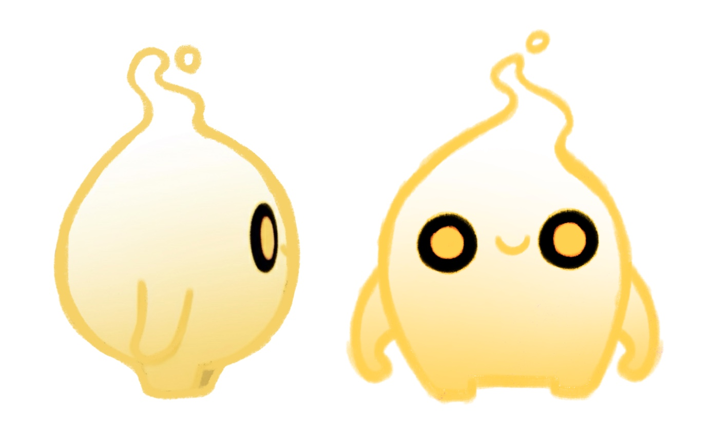
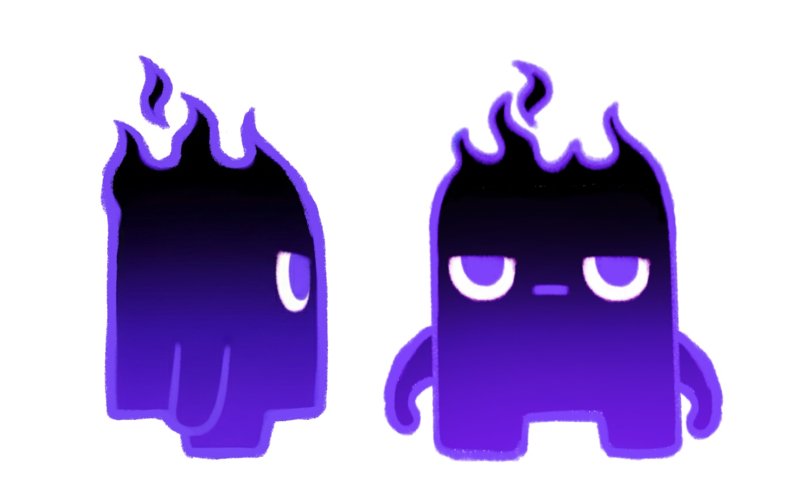
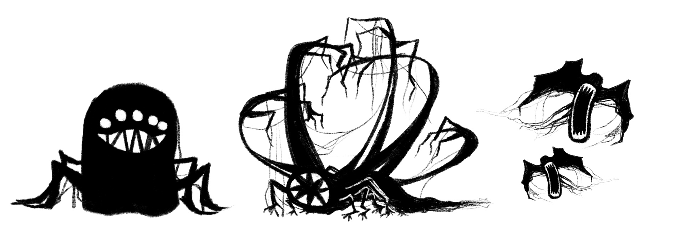
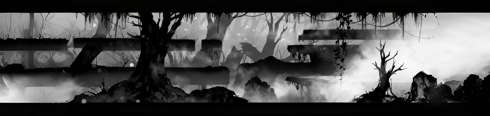
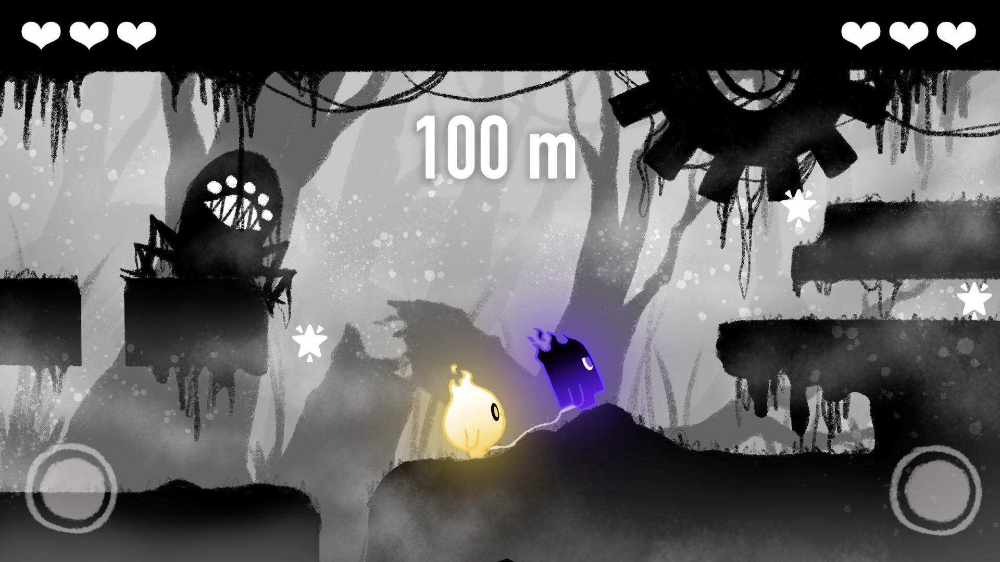
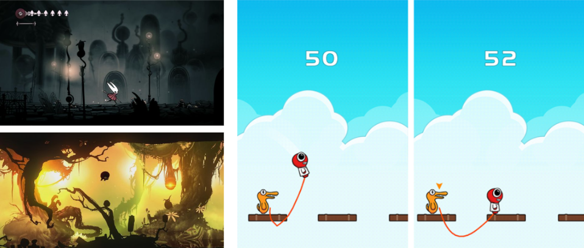

|
遊戲類型 雙人合作無盡酷跑 |
適用平台 桌機平台： Windows |

企劃理念
《BOUND TOGETHER》的核心目標是讓「合作」成為遊戲的靈魂與致勝關鍵，整個遊戲聚焦於「只有在一起，才能走得更遠」的理念。
透過兩位玩家共用一條不可分離的「繫線」，將「羈絆」從單純的劇情設定轉化為核心的遊玩機制：
機制與情感的結合： 「繫線」是挑戰的來源，它限制了個體的自由，同時也是唯一能讓他們突破困境的希望與力量。
操作與信任的共鳴： 玩家必須在極高壓的無盡酷跑環境中進行精準的協調與移動，
每一次向前、跳躍與閃避，都需要建立在對夥伴行動的深入理解與完全信任之上。
最終，透過這條「繫線」的操作與感受，體會到「信任是持續前進的唯一燃料」，並在遊戲中真實領悟到雙人合作的深刻意義。
在被稱為「迴音之境」的古老地下文明中，一場名為「大寂靜」的災難凍結了世界，
兩個微小的生命體——光精靈與影精靈——在世界核心「光心」即將熄滅的微光中誕生。
他們一出生就被一條「迴響之線」緊密連結，這條線既是生命的保障，也是無可逃脫的束縛，
為了阻止黑暗力量「虛無之黯」徹底吞噬世界，他們被迫踏上無盡的奔跑旅程。
前進的目標並非拯救世界，而是透過極致的合作與信任，跨越遺跡與陷阱，收集失落的「迴音」，
只有持續的奔跑與不斷強化的「繫線」，才能為瀕死的「光心」提供永恆的動能，
這是一場沒有終點的競賽，他們必須以永不熄滅的羈絆，成為世界的「光流」，守護這片黃昏之境，讓希望成為永恆。
《BOUND TOGETHER》是一款強調雙人合作與精準同步的 2D 橫向無盡酷跑遊戲，
其核心機制圍繞一條「迴響之線」展開，這條線將兩名玩家緊密連結，成為遊戲的靈魂。
玩家必須獨立操控各自角色的水平移動與跳躍，但由於繫線物理的限制，雙方的動作會產生直接的相互影響與拉力，
玩家不能超出固定的繫線長度，每一次轉向、加速或跳躍，都要求兩人必須建立在完美的合作與信任之上，才能在崩壞的世界中保持協調前進。
遊戲的目標是穿越無盡的遺跡，避開「虛無之黯」具象化的陷阱與障礙物，並盡可能收集「迴音」以累積里程碑分數，
遊戲採用連鎖懲罰機制：任一方掉入深淵或耗盡三次生命（代表「光心」的共鳴修復次數），旅程即刻結束，
這迫使玩家必須將彼此視為一體，使「繫線之絆」不只是設定，更是決定生存與否的唯一依據。
1、光之精靈：
象徵世界的記憶與未來的希望外觀與氣質體態圓潤，全身散發著柔和的青藍色光芒，邊緣帶有粉色霓虹。
擁有寬大、充滿光暈的眼睛，總是向前注視著，透露出一種純粹的、不滅的希望感。
起源意義誕生於「光心」中最純淨、最不願放棄的能量，她代表著過去「光之民」所留下的美好記憶與對世界復甦的渴望。
性格特質樂觀、直覺強、行動派，傾向於引導方向和探索，是推動兩人持續奔跑的「動力」。

2、影之精靈：
象徵世界的殘響與必要的警惕外觀與氣質主體呈深沉的黑藍或純黑色，輪廓由銳利的紫色或深藍色光芒勾勒。
擁有細長、警惕的單眼，造型更偏向剪影與兜帽，代表著黑暗的殘餘。
起源意義誕生於「光心」能量與周遭「虛無之黯」殘響的結合，他承載著世界衰敗的警訊與潛在的威脅。
性格特質謹慎、沉穩、本能地防禦，傾向於觀察和判斷危險，是確保兩人不墜落的「錨點」。

3、虛無之黯具象化
闇影吞噬者：
形態上最接近一個「生物」，多眼的設計營造出警覺且飢餓的威脅感，它代表「虛無之黯」對生命的純粹吞噬，可能是在遊戲中追趕或直接撞擊玩家的基礎敵人。
羈絆截斷者：
形態最複雜，充滿糾結與利爪，完美地體現了「試圖切斷繫線」的設定，作為固定在場景中、需要玩家利用繫線技巧才能繞過的核心陷阱或關卡機關。
無聲利刃：
形態簡潔且銳利，暗示高速或突然的攻擊，代表「大寂靜」災難中的潛在威脅，作為快速伸縮、突然出現的陷阱，旨在瞬間造成傷害或生命數的減少。

風格： 2D 剪影搭配手繪質感與霓虹光效，採用低飽和度（或黑白灰）的背景，襯托角色強烈的紅藍冷暖對比光暈。
氛圍： 無聲的黃昏與崩壞。，營造一種沉寂、孤寂、被遺棄的地下世界感，強調「大寂靜」災難的影響。
背景：營造世界觀深度， 這些元素採用漸層的灰色，提供景深和孤寂感，暗示世界崩塌的規模巨大，但與玩家的互動性為零。

遊戲畫面示意

參考遊戲
場景參考：空洞騎士：絲綢之歌 遊戲設定參考：Badland

pipbi.xm@gmail.com
Instagram｜@pipbi.xm
Always open for collaboration & creative ideas.